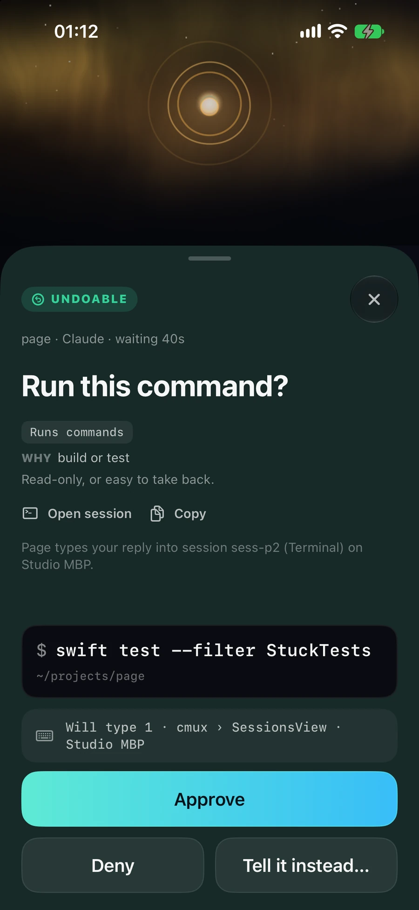

Page Relay
Answer from the lock screen.
Approve, deny or reply from the notification. Only undoable commands approve in one tap; anything riskier opens the decision sheet, which names the exact keystroke and terminal.

page paged younow
Approval needed: [Bash]
swift test --filter StuckTestsbottle-flip paged you4m ago
Approval needed: [Bash]
rm -rf Builds/Dev/*.app